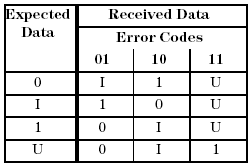

EMAP? - (Error MAP)
The EMAP? query returns binary data from the detailed Error Map (which contains the error information of the last test execution) in a variety of formats. It is a more powerful version of ERMP?. Note that EMAP? can only report what was actually recorded. The recording options are defined with DCRM.
EMAP? can report the error data in three different formats:
- On the cycle level (resolution mode CYCL), it reports one result per cycle.
- On the sub-cycle level (resolution mode SCYC), it reports the result combinations (sub-cycles) as they were defined with DCRM.
- On the edge level (resolution mode EDGE), it returns all 8 edges for
every cycle, not only those that were recorded; the unrecorded edges are returned as passed. In
this way you can determine the edge numbers of the failing recorded edges from their position
within the reply.
For example, if edges 2 and 7 were recorded (and only a one bit result is requested), then EMAP? will return 0100 0010 for a cycle in which both these edges have failed.
If you require data on the cycle or sub-cycle level, you can select whether one byte shall contain the results of only one cycle, or if the results shall be returned in a packed format, where they follow one another immediately. In the latter case one byte will contain the results up to 8 cycles.
With this command you can retrieve site specific information (only one site can be in focus at a time). For the site in focus, SmarTest displays results in the Testflow Editor and in the result tools. Also, any firmware queries report setup and results for the site currently in focus only.
Syntax
EMAP? {pin_res},{start_cycle},{no_of_cycles},{resolution_mode},[results_per_cycle],[bits],{rep_mode},{results_align},[byte_max], [MUX,] {(pinlist)}
returns:
EMAP {pin_res},{start_cycle},{no_of_cycles},{resolution_mode},{results_per_cycle},{bits},{rep_mode},{results_align},[byte_max],{(pinlist)}, [MUX,] {#spec(data)}
pin_res
|
Specifies the pin granularity. Possible values are: |
|
PPIN |
Separate results will be reported for every pin of the pin list. |
|
COMB |
Only one global result will be reported for all pins of the pin list. |
|
start_cycle |
In the query, this is an integer that defines the first test cycle to be reported. In the reply, this is the first cycle that is returned. If the requested cycle range exceeds the capacity of the Error Map, the index of the first returned cycle may be greater than that of the first requested cycle. |
|
no_of_cycles |
This is an integer that defines the number of test cycles to be reported. The range for this parameter is 0 to248 - 1. In the reply, this parameter indicates the number of cycles which have been read. If a 0 is returned, no data is available for the requested range. |
|
resolution_mode |
Defines how the recorded results are combined. Possible values are: |
|
CYCL |
In this mode all recorded results are combined into one result per cycle. |
|
SCYC |
In this mode the results are reported as they were recorded. |
|
EDGE |
This mode requests error information for each recorded receive edge. If the results_per_cycle parameter is omitted, the reply will return all 8 edges, even if only 2 or 4 edges were recorded; the edges that were not recorded will be represented as passed. In this way, the edge number of the failing recorded edges will be indicated by their position within the result data stream. The EDGE option requires one of the following two sets of conditions to be satisfied:
or (see Retrieving edge information by repeating the test):
|
|
results_per_cycle |
This parameter is only relevant for resolution mode EDGE. If you are only interested in an initial segment of the 8 edge sequence that is returned by default, you can specify the length of this segment here. In certain situations, this allows you to reduce the size of the reply. If the MUX flag is set, and one of the specified PS (Pin Scale) pins is multiplexed to an HXA pin, then the edges of the PS pins that are multiplexed to this HXA pin will be returned interleaved as follows: r1 of PS pin 1, ..., r1 of PS pin n, r2 of PS pin 1, ..., r2 of PS pin n,..., r8 of PS pin 1, ..., r8 of PS pin n Here, n is 2 or 4, and the PS pins are ordered as defined in the BOARDCONF section of the model file. Accordingly, if the multiplexing factor of the HXA pin is 4, and 5 edges per cycle are requested, then the first edge of every PS pin plus the second edge of the first PS pin will be returned. |
|
bits |
Specifies how detailed the reported error code is to be in case of failure. Possible values are: |
|
PF |
Only a 1 bit Pass/Fail result will be returned. |
|
PFC |
In case of failure, a more detailed two bit code will be returned. The received data can be reconstructed from the expected data and the error code as follows:

"I" stands for "Intermediate" and "U" for "Unstable". Note that 2 bit codes can only be reported if 2 bit codes were recorded (bits parameter of DCRM set to PFC). |
|
rep_mode |
Specifies the reporting mode for the Error Map. Possible values are: |
|
ALL |
All cycles within the selected area are reported. If the data was recorded in acquire failure mode, EMAP? will expand the reply accordingly. |
|
EOLY |
As far as is feasible, only failed cycles are reported. |
|
results_align |
Specifies how the results, as defined by the resolution_mode, results_per_cycle and bits parameters, are aligned within the returned data stream. The supported values are: |
|
BYTE |
By this option, no byte will contain results of more than one cycle. If the results returned per cycle do not make up exactly one or two bytes, they will be padded accordingly. Note that if two bit codes are requested for resolution mode EDGE, and results_per_cycle is set to a value < 8, the results will always be padded to two bytes, even if results_per_cycle is ≤ 4. |
|
|
PACK |
This option is mainly relevant for resolution modes CYCL and SCYC. It will have the effect that the results are not padded, but follow one another immediately. Thus, the results of 8 or 4 cycles (depending on the bits setting) will be packed into one byte in CYCL mode, and the results of 4 or 2 cycles (depending on the bits setting) will be packed into one byte in SCYC mode. PACK will have an effect on resolution mode EDGE only, if the initial segment defined with results_per_cycle already makes up a complete byte. This would be the case, for example, if two bit codes are recorded for all 8 edges, and results_per_cycle is set to 4. |
byte_max |
In the query, this parameter specifies the maximum number of bytes that may be returned. This option is primarily intended for the reporting mode EOLY, where the size of the data that will be returned cannot be calculated beforehand. In the answer, the following codes can be returned: |
|
EOB |
The cycle range of the query exceeds the specified maximum number of bytes. |
|
EOF |
The cycle range of the query exceeds the cycle range to be recorded (as defined with DCGM and DCRP). |
|
EOM |
The cycle range of the query exceeds the actual content of the Error Map. |
|
MUX |
If this flag is set, and one of the specified (Pin Scale) pins is multiplexed to an HXA pin, then the reply for this pin will combine the results of all Pin Scale pins that are multiplexed to the respective HXA pin. In particular, if information on the edge level is requested, then the edges of all multiplexed Pin Scale pins will be returned interleaved as follows: r1 of PS pin 1, ..., r1 of PS pin n, r2 of PS pin 1, ..., r2 of PS pin n, ... r8 of PS pin 1, ..., r8 of PS pin n Here, n is 2 or 4, and the order of the PS pins is that defined in the BOARDCONF section of the model file. |
|
pinlist |
Specifies the pins or pin groups for which information is returned. If more than one pin is to be included, the names must be separated by a comma. All pins in the pin list must have type O or IO. They must also all belong to the same port in the current start label. If the MUX flag is set, then each pin in the pin list should represent a different HXA pin, and all HXA pins should have the same multiplexing factor. |
|
#spec(data) |
The binary data that are returned. The general format is: Nn1n2...nNdata_stream where the digit N defines the number of the digits ni (1 ≤ i ≤ N) that specify the length of data_stream in bytes. The data stream itself consists of blocks each of which contains result data for every cycle (passed as well as failed) within a contiguous cycle range. Every block has a header that specifies
The result data is also big-endian encoded. If the rep_mode parameter has been set to ALL, only one block is returned, which contains the whole selected result range. If rep_mode has been set to EOLY, then EMAP? will close a block after a failed cycle, and start a new block at the next failed cycle, if the passed cycles in-between occupy at least as much space as a block header (12 bytes). See the first example below. If you are working with HXA pins note that the block size specifies bytes, not cycles. Thus, a block of size 32 contains 4 cycles of a HXA pin with 4 multiplexed Pin Scale pins. |
|
Application
Error Map
Examples
Example 1
> EMAP? COMB,0,42,EDGE,8,,EOLY,BYTE,,(dut_tx3) < EMAP COMB,0,42,EDGE,8,PF,EOLY,BYTE,,(dut_tx3),#9000000038 \x00\x00\x00\x00\x00\x00\x00\x0F \x00\x00\x00\x03 \x03\x00\x80 \x00\x00\x00\x00\x00\x00\x00\x1F \x00\x00\x00\x0B \x80\x00\x00\x80\xA0\x00\x80\xA0\x00\x00\x0A
This example shows the format of the binary data that is returned by EMAP?. The data stream has been broken up to make it more readable. Two data blocks are returned. The information is to be decoded as follows:
Block |
Start cycle |
Number of cycles |
Failing edges |
||
|
Hex |
Dec |
Hex |
Dec |
|
1. block |
0F |
15 |
3 |
3 |
edges 7,8 (03 = 00000011) in cycle 15 edge 1 (80 = 1000000) in cycle 17 |
2. block |
1F |
31 |
0B |
11 |
For example: edge 1 (80 = 10000000) in cycle 31 edges 1,3 (A0 = 10100000) in cycle 35 |
For each cycle, all 8 edges are reported. The first block is closed because 13 passing cycles (= 13 bytes) lie between the failed cycle 17 and the next failed cycle 31.
Example 2
> FTST? < FTST F > EMAP? COMB,0,50000000,EDGE,8,PF,EOLY,BYTE,3500000,(O1,O2) < EMAP COMB,0,12000000,EDGE,8,PF,EOLY,BYTE,EOB,(O1,O2),#90003500000
This example illustrates the use of the byte_max parameter. The test comprises 50 million cycles. The Error Map is located in the RDRAM. If the number of errors exceeds 0.5% of the cycles, that is, as soon as more than 250,000 errors have been found, the device is to be rejected offhand. Therefore, EMAP? is called with the EOLY option, so that only failed cycles are returned, and the maximum length of the reply is restricted to 3,500,000. This is based on the worst case assumption that every error occupies 13 bytes. The answer indicates that in fact more than 0.5% of the cycles have failed. Note that only 7% of the 50 million test cycles have to be uploaded to the system controller.
Example 3
The following example illustrates the difference between the resolution modes EDGE and SCYC.
> DCRM? EMAP,(@)
< DCRM EMAP,4,PFC,"c1:1 c2:2 c3:7 c4:8",(@)
> $EMAP? PPIN,0,12,EDGE,,PF,ALL,BYTE,,(out)
< EMAP PPIN,0,12,EDGE,8,PF,ALL,BYTE,,(out),#224
00000000 00000000 00000000 00000000 00000000 00000000 00000000 00000000
00000000 00000000 00000000 00001100 11000011 10000011 00000000 00000000
00000000 00000000 00000000 00000011 00000000 00000000 00000000 00000000
> $EMAP? PPIN,0,12,SCYC,,PF,ALL,BYTE,,(out)
< EMAP PPIN,0,12,SCYC,4,PF,ALL,BYTE,,(out),#224
00000000 00000000 00000000 00000000 00000000 00000000 00000000 00000000
00000000 00000000 00000000 00001100 11110000 10110000 00000000 00000000
00000000 00000000 00000000 00110000 00000000 00000000 00000000 00000000 The first failing cycle is cycle 0 (fifth byte in the second line of the EMAP? reply); in this cycle, edges 1,2,7,8 have failed. In addition, cycle 1 (edges 1,3,4) and 7 (edges 3,4) contain errors. With the PACK option, resolution mode SCYC compresses 12 bytes into 6:
> $EMAP? PPIN,0,12,SCYC,,PF,ALL,PACK,,(out)
< EMAP PPIN,0,12,SCYC,4,PF,ALL,PACK,,(out),#218
00000000 00000000 00000000 00000000 00000000 00000000 00000000 00000000
00000000 00000000 00000000 00000110 11111011 00000000 00000000 00000011
00000000 00000000 But the following call of EMAP? will produce an error message:
> $EMAP? PPIN,0,12,EDGE,4,PF,ALL,PACK,,(out)
The reason for this is that the results per cycle are only 4 bits long.
Example 4
The following example shows the expanded format for 2 bit error codes (2 bytes per cycle):
> DCRM? EMAP,(@)
< DCRM EMAP,4,PFC,"c1:1 c2:2 c3:3 c4:4",(@)
> $EMAP? PPIN,0,7,EDGE,,PFC,ALL,BYTE,,(out)
< EMAP PPIN,0,7,EDGE,8,PFC,ALL,BYTE,,(out),#228
00000000 00000000 00000000 00000000 00000000 00000000 00000000 00000000
00000000 00000000 00000000 00001110 11110011 00000000 00001111 00000000
00000000 00000000 00000000 00000000 00000000 00000000 00000000 00000000
00001100 00000000In cycle 0, edges 1, 2, and 4 have failed. In cycle 1, edges 3 and 4 have failed. In cycle 6, edge 3 has failed.
> $EMAP? PPIN,0,7,EDGE,4,PFC,ALL,PACK,,(out)
< EMAP PPIN,0,7,EDGE,4,PFC,ALL,PACK,,(out),#220
00000000 00000000 00000000 00000000 00000000 00000000 00000000 00000000
00000000 00000000 00000000 00000111 11110011 00001111 00000000 00000000
00000000 00000000 00001100In this case, the PACK option is accepted because the initial segment of 4 two bit codes already makes up one byte.
Functional changes
- Introduced before SmarTest 6.3.2